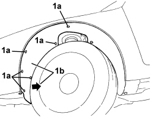
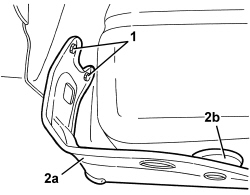

5050A11 WINDSCREEN WASHER FLUID RESERVOIR SUPPORT - R. R.
- Path
- Procedures > 50 AUXILIARY UNITS > 5050 SCREEN WASHERS AND HEADLAMP WASH/WIPE > 5050A WINDSCREEN AND HEADLAMP WASHER RESERVOIR > 5050A11 WINDSCREEN WASHER FLUID RESERVOIR SUPPORT - R. R.
- Kind
- repair procedure (removal / refitting; the operation number is the code)
- Applies to
- all engines; all production periods
- Interactive page
- https://sloeber94.github.io/elrnDB-aBrrSpdr/en/#/946002297
Applies to: all engines; all production periods
 Removing
Removing
 Refitting
RefittingOp. 7055B54 UNDER ENGINE PROTECTION/GUARD - R.R.
1. Undo the front bolts (1a) fixing the left front wheel arch (1b) and raise it slightly.

Applies to: all engines; all production periods
1. Undo the bolts.
2. Remove the support (2a) releasing the support buffer (2b).

Applies to: all engines; all production periods
Refitting
Removing- Check that the support is not damaged.
- Fit the support in place and attach the support buffer.
- Tighten the bolts.
Component | Fastening | dia | Value (daNm) | Validity |
|---|---|---|---|---|
SCREEN WASHER RESERVOIR SUPPORT | Bolt | M6x16 | 0.7 ÷ 1.1 |
- Tighten the left front wheel arch front fixing bolts.